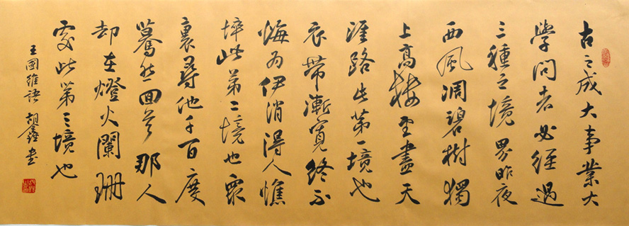

先秦 两汉 魏晋 南北朝 隋代 唐代 五代 宋代 金朝 元代 明代 清代
论语 史记 周易 易传 孟子 左传 大学 中庸 尚书 礼记 周礼 仪礼 庄子 老子 孟子 墨子 荀子 列子 管子 吴子 素书 孝经 将苑 六韬 反经 冰鉴 论衡 智囊 汉书 后汉书 韩非子 淮南子 尉缭子 山海经 三字经 百家姓 千字文 鬼谷子 伤寒论 商君书 战国策 三国志 司马法 逸周书 搜神记 金刚经 地藏经 弟子规 菜根谭 水经注 孙子兵法 三十六计 资治通鉴 续资治通鉴 黄帝内经 本草纲目 了凡四训 梦溪笔谈 世说新语 天工开物 文心雕龙 吕氏春秋 孔子家语 颜氏家训 孙膑兵法 笑林广记 百战奇略 公孙龙子 黄帝四经 贞观政要 文昌孝经 六祖坛经 增广贤文 幼学琼林 搜神后记 容斋随笔 围炉夜话 农桑辑要 徐霞客游记 四十二章经 更多>>
人间词话七则
王国维
有有我之境，有无我之境。“泪眼问花花不语，乱红飞过秋千去。”“可堪孤馆闭春寒，杜鹃声里斜阳暮。”有我之境也。“采菊东篱下，悠然见南山。”“寒波澹澹起，白鸟悠悠下。”无我之境也。有我之境，以我观物，故物我皆著我之色彩。无我之境，以物观物，故不知何者为我，何者为物。古人为词，写有我之境者为多，然未始不能写无我之境，此在豪杰之士能自树立耳。
境非独谓景物也。喜怒哀乐，亦人心中之一境界。故能写真景物，真感情者，谓之有境界。否则谓之无境界。
境界有大小，不以是而分优劣。“细雨鱼儿出，微风燕子斜”何遽不若“落日照大旗，马鸣风萧萧”。“宝帘闲挂小银钩”何遽不若“雾失楼台，月迷津渡”也。
词至李后主而眼界始大，感慨遂深，遂变伶工之词而为士大夫之词。周介存置诸温韦之下，可为颠倒黑白矣。“自是人生长恨水长东”、“流水落花春去也，天上人间”，《金荃》《浣花》，能有此气象耶？
古今之成大事业、大学问者，罔不经过三种之境界：“昨夜西风凋碧树。独上高楼，望尽天涯路。”此第一境界也。“衣带渐宽终不悔，为伊消得人憔悴。”此第二境界也。“众里寻他千百度，蓦然回首，那人却在，灯火阑珊处。”此第三境界也。此等语皆非大词人不能道。然遽以此意解释诸词，恐为晏欧诸公所不许也。
大家之作，其言情也必沁人心脾，其写景也必豁人耳目。其辞脱口而出，无矫揉妆束之态。以其所见者真，所知者深也。诗词皆然。持此以衡古今之作者，可无大误也。
诗人对宇宙人生，须入乎其内，又须出乎其外。入乎其内，故能写之。出乎其外，故能观之。入乎其内，故有生气。出乎其外，故有高致。美成能入而不出。白石以降，于此二事皆未梦见。